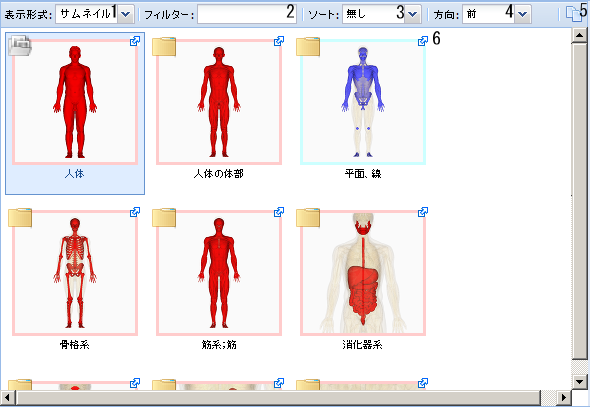

メインパネルに表示されているパーツを画面下部のPalletにドラッグ＆ドロップすることで、描画するパーツとして追加することができます。
BP3DViewerタブのメインパネルは下記の構成をしています。

- 表示形式選択ドロップダウンリスト
表示形式を選択します。
- サムネイル：サムネイル画像のみを表示します。
- リスト：リスト形式でサムネイル画像および、各種情報を表示します。
- フィルタテキストボックス
表示されている項目に対して、ここで入力した文字列が名称（日本語表示時には日本語名称、英語表示時には英語名称）に含まれているパーツだけが表示されます。
- ソート選択ドロップダウンリスト
パーツの表示をここで選択した項目によってソートした順にします。
- 方向選択ドロップダウンリスト
パーツの表示をここで選択した方向から見たものにします。
- ボタン
選択しているパーツの情報をコピーするためのダイアログボックスを表示します。
- パーツ
レフトパネルで選択したもののうち、フィルターに適合するパーツが表示されます。表示形式やサムネイル画像は各種設定が反映されます。
サムネイル左上のアイコンをクリックすると、下記の動作をします。
また、青枠のパーツはFMAのis_aにおいて、FMA67112 Immaterial anatomical entityに含まれていることを示しています。